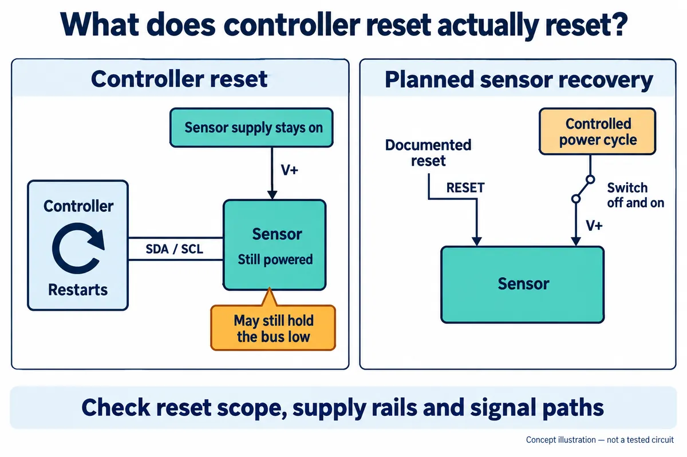

Your sensor prototype has stopped updating. The screen still works, so you restart the controller. It boots normally, but the readings remain frozen. Pulling out the power cable brings them back. Before you hand an enclosed logger or interactive device to someone else, that difference deserves an explanation.
One possibility is a stuck I2C bus—the two shared wires that connect the controller to its sensors. Restarting the controller does not necessarily restart a separately powered sensor. A device still holding one of those wires low can prevent communication from starting again.
This is a recovery-design problem, not proof that your sensor is faulty. A public embedded-development discussion describes intermittent lockups that persisted through firmware changes. The replies offer several possible causes, without establishing one diagnosis for the original setup. Your own failure needs a capture, too.

First find out what actually restarted
Make a small reset map before changing code. Does the reset button affect only the controller? Does the sensor have a reset input? Does the watchdog restart the processor while the sensor supply stays on? A power LED cannot answer those questions; use the schematic and the relevant device documentation.
The standard bus-clear procedure makes a useful distinction. If the clock line, SCL, is held low, it calls for hardware reset or power cycling of the affected devices. If the data line, SDA, is held low, it describes sending nine clock pulses before escalating. This follows NXP's I2C specification, section 3.1.16. It is a recovery attempt, not a guarantee that every fault can be cleared in software.
For example, an interrupted transfer may leave a target waiting for the rest of the clock sequence. But a shorted wire will not be repaired by extra clocks. Capture SDA, SCL and the reset event so the engineer can distinguish a transfer left unfinished from a line that cannot rise. A brief legitimate clock stretch is also different from a line stuck indefinitely.
Give recovery a limit—and a way to escalate
The application should stop waiting after a defined timeout and record which operation failed. The timeout must fit the actual device and transaction; copying one number across every sensor can create false failures. If several tasks share the bus, one owner should coordinate recovery so another task does not start a transfer halfway through it.
When SCL can rise but SDA remains low, a supported bus-clear routine may help. The controller implementation matters: some peripherals provide recovery support; others require carefully switching the pins to GPIO. Do not force a push-pull high output against a device holding the line low. Use the electrical behavior required by the bus and verify that the clock really rises.
If the bus remains blocked, use a documented reset or power-cycle path. TI's stuck-bus application note explains why disturbances can leave devices out of step, and describes both software recovery and hardware isolation approaches. Recovery should restore service while the underlying cause is investigated; a rising recovery count is not evidence of a healthy design.
Decide whether the sensor can really be powered off
A switch in the sensor supply may give an enclosed prototype a recovery option it otherwise lacks. Before adding one, check the rest of the circuit. Signals and pull-ups connected to another live rail may feed an unpowered device through its pins. Turning off one supply does not by itself prove that the sensor has reached the conditions required for a power-on reset.
Also decide what shares that supply or reset line. Recovering one sensor might restart the display, lose another device's configuration, or interrupt an output. List those effects explicitly. For a larger system, separating a troublesome branch may be more appropriate than resetting everything, but that is a hardware decision to validate against the actual design.
A software reset command is only useful if the target supports it and communication still works. It cannot be the sole escape route from a bus that cannot carry the command. This is why recovery needs consideration before the enclosure and wiring are finalized, even when the first bench demonstration appears reliable.
Test what the user will see after a failure
Plan a controlled test with the engineer: interrupt a transfer with a controller reset while the sensor remains powered, then observe the restart. Repeat with the intended reset and supply controls. Do not deliberately short signals or interrupt power in ways the hardware has not been designed to tolerate. These are proposed checks, not a recorded recovery experiment.
Record the initial bus state, attempted recovery, elapsed time, first valid new sample and any lost configuration. The test should also reach the failure limit. If recovery cannot finish, the interface should say the sensor is unavailable instead of continuing to display an old value as current. A successful register read alone does not prove that a fresh measurement has been taken.
The useful handover is therefore more than “it restarts.” It explains which parts restart, what happens when recovery fails, and what the user sees. If your prototype only recovers when someone unplugs it, discuss the integration problem with Anvol and bring the wiring diagram, module details and one recorded failure sequence.